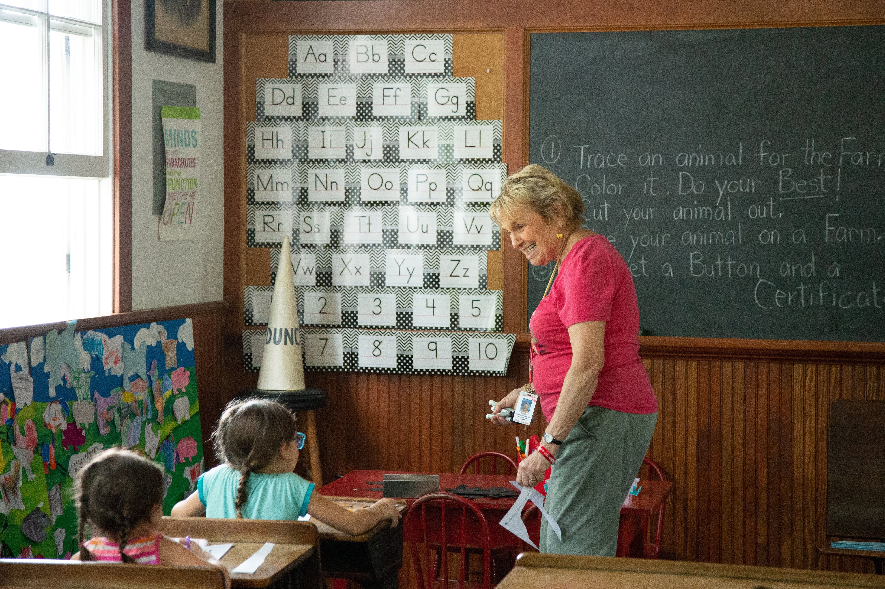

Untrefscholl
INSTITUTO DE EDUCACIÓN PRIMARIA
¿Quienes somos?

Somos un instituto de educación inicial comprometido con brindar una educación de calidad y un entorno acogedor para el desarrollo integral de nuestros pequeños alumnos. Con más de 20 años de experiencia, hemos construido una sólida trayectoria en el campo educativo, enfocándonos en cultivar el amor por el aprendizaje desde las primeras etapas de la infancia.
Nuestra misión es proporcionar un ambiente seguro, estimulante e inclusivo que motive a nuestros estudiantes a descubrir, explorar y aprender de manera creativa. Creemos que cada niño es único, y nuestro equipo de profesores altamente capacitado está dedicado a identificar y nutrir las habilidades y talentos individuales de cada estudiante.
En UntrefScholl, abrimos las puertas a un mundo de descubrimiento y crecimiento, creando una base sólida para un futuro brillante y exitoso.
¿Por que elegirnos?
Ofrecemos educación de excelencia con un enfoque integral que desarrolla las habilidades académicas y sociales de cada niño.
Nuestro profesorado altamente capacitado está comprometido con el crecimiento académico y emocional de los alumnos, brindando un apoyo personalizado en su proceso de aprendizaje.
Creemos en un ambiente seguro, inclusivo y estimulante donde los estudiantes pueden desarrollar su creatividad y curiosidad, fomentando un amor por el aprendizaje.
Estamos a la vanguardia de la educación, incorporando tecnología y metodologías innovadoras para preparar a nuestros estudiantes para enfrentar los desafíos del futuro.
- 
Propuesta educativa
.png)
Educación de calidad: Nuestra institución se compromete a brindar una educación de calidad que se adapte a las necesidades individuales de cada estudiante. Contamos con un equipo docente altamente capacitado que utiliza métodos pedagógicos innovadores para fomentar el aprendizaje significativo y el desarrollo integral de los niños.
-
Ambiente seguro y acogedor: La seguridad y el bienestar de nuestros estudiantes son nuestra máxima prioridad. Nuestras instalaciones están diseñadas pensando en su protección, contamos con sistemas de seguridad eficientes y personal capacitado en primeros auxilios. Además, promovemos un ambiente inclusivo y amigable donde los niños se sienten valorados y respetados.
-
Enfoque integral: Nos preocupamos por el desarrollo integral de los niños, no solo en términos académicos, sino también en su crecimiento emocional, social y físico. Ofrecemos programas extracurriculares y actividades deportivas y artísticas que complementan su formación académica, fomentando así la creatividad, la colaboración y el equilibrio entre cuerpo y mente.

Comunidad comprometida: Nuestra institución cuenta con una comunidad educativa comprometida, formada por padres, docentes y personal administrativo que trabajan en conjunto para brindar el mejor entorno educativo posible. Fomentamos la comunicación abierta y constante con los padres, promoviendo una relación de confianza y colaboración para garantizar el éxito académico y personal de sus hijos.
Ultimas Noticias
Festival de colores y creatividad 🎨🌈
¡El arte y la creatividad están en el aire! Anunciamos con entusiasmo el Festival de Colores, un evento especial en el que nuestros pequeños artistas podrán expresar su imaginación y creatividad a través de una serie de actividades artísticas. Desde la pintura con las manos hasta la mezcla de colores, los niños disfrutarán de un día lleno de diversión mientras descubren su lado artístico.
Aventura en el jardín botánico 🌿🦋
¡Hora de explorar la naturaleza! Estamos encantados de anunciar que llevaremos a nuestros pequeños botánicos en una emocionante aventura al jardín botánico local. Durante esta actividad especial, los niños aprenderán sobre diferentes tipos de plantas, observarán mariposas y otros insectos, y comprenderán la importancia de cuidar y respetar nuestro entorno natural.
Tecnología en el aula: preparando a la generación del futuro 📱🚀
Reconociendo la creciente importancia de la tecnología en la educación, nos complace anunciar una nueva serie de capacitaciones centradas en la integración de la tecnología en el aula. Nuestros profesores explorarán cómo utilizar de manera efectiva herramientas digitales, aplicaciones educativas y recursos en línea para mejorar el proceso de aprendizaje.